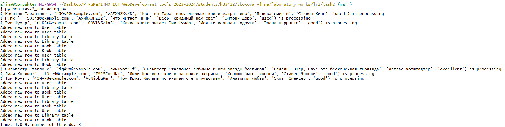
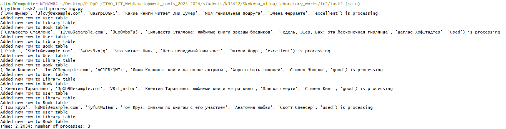
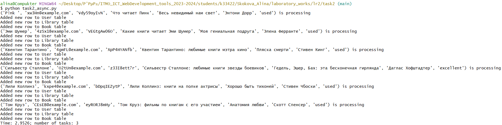

Задача 2. Параллельный парсинг веб-страниц с сохранением в базу данных
Напишите программу на Python для параллельного парсинга нескольких веб-страниц с сохранением данных в базу данных с использованием подходов threading, multiprocessing и async. Каждая программа должна парсить информацию с нескольких веб-сайтов, сохранять их в базу данных.
Порядок выполнения:
-
Напишите три различных программы на Python, использующие каждый из подходов: threading, multiprocessing и async.
-
Каждая программа должна содержать функцию parse_and_save(url), которая будет загружать HTML-страницу по указанному URL, парсить ее, сохранять заголовок страницы в базу данных и выводить результат на экран.
-
Используйте базу данных из лабораторной работы номер 1 для заполенния ее данными.
-
Для threading используйте модуль threading, для multiprocessing - модуль multiprocessing, а для async - ключевые слова async/await и модуль aiohttp для асинхронных запросов.
-
Создайте список нескольких URL-адресов веб-страниц для парсинга и разделите его на равные части для параллельного парсинга.
-
Запустите параллельный парсинг для каждой программы и сохраните данные в базу данных.
-
Замерьте время выполнения каждой программы и сравните результаты.
Подключение к серверу PostgreSQL
Сначала был создан конфигурационный файл database.ini по шаблону:
Затем был создан файл config.py с функцией load_config(), которая читает данные конфигурации из database.ini:
from configparser import ConfigParser
def load_config(filename='database.ini', section='postgresql'):
parser = ConfigParser()
parser.read(filename)
# get section, default to postgresql
config = {}
if parser.has_section(section):
params = parser.items(section)
for param in params:
config[param[0]] = param[1]
else:
raise Exception('Section {0} not found in the {1} file'.format(section, filename))
return config
if __name__ == '__main__':
config = load_config()
print(config)
Используя database.ini, можно скрывать информацию о доступе в БД, убирая ее из публичного доступа.
Добавление записей в БД
import psycopg2
from config import load_config
import bcrypt
from datetime import datetime
def hash_password(password):
pwd_bytes = password.encode('utf-8')
salt = bcrypt.gensalt()
hashed_pwd = bcrypt.hashpw(password=pwd_bytes, salt=salt)
return hashed_pwd.decode('utf-8')
def insert_data(new_data):
config = load_config()
for entry in new_data:
print(f'{entry} is processing')
new_username, new_email, new_password, new_library_name, new_book_name, new_book_author, new_book_condition = entry
pass_hashed = hash_password(new_password)
sql_user = f"""INSERT INTO public."user" (username, email, password, created_at)
VALUES ('{new_username}', '{new_email}', '{pass_hashed}', '{datetime.now()}') RETURNING user_id;"""
try:
with psycopg2.connect(**config) as conn:
with conn.cursor() as cur:
cur.execute(sql_user)
# get the generated id back
rows = cur.fetchone()
if rows:
new_user_id = rows[0]
print('Added new row to User table')
sql_lib = f"""INSERT INTO public.library (user_id, library_name)
VALUES ('{new_user_id}', '{new_library_name}') RETURNING library_id;"""
cur.execute(sql_lib)
rows = cur.fetchone()
if rows:
new_library_id = rows[0]
print('Added new row to Library table')
sql_book = f"""INSERT INTO public.book (book_name, book_author, book_condition, library_id)
VALUES ('{new_book_name}', '{new_book_author}', '{new_book_condition}', '{new_library_id}') RETURNING book_id;"""
cur.execute(sql_book)
print('Added new row to Book table')
conn.commit() # commit the changes to the database
except (Exception, psycopg2.DatabaseError) as error:
print(error)
if __name__ == '__main__':
data = [
('user9', 'user9@example.com', 'password9', 'library9', 'book3', 'author3', 'excellent'),
('user8', 'user8@example.com', 'password8', 'library8', 'book2', 'author2', 'excellent')
]
insert_data(data)
threading
import requests
from bs4 import BeautifulSoup
import time
import secrets
import string
import random
import threading
from db_insert import insert_data
def get_condition():
conditions = ['excellent', 'good', 'used']
return random.choice(conditions)
def gen_password(n):
alphabet = string.ascii_letters + string.digits
password = ''.join(secrets.choice(alphabet) for i in range(n))
return password
def parse_and_save(urls):
for url in urls:
response = requests.get(url)
response.raise_for_status()
soup = BeautifulSoup(response.text, 'lxml')
new_username = soup.find('div', class_='info').find('h2').text
new_email = f'{gen_password(5)}@example.com'
new_password = gen_password(10)
new_library_name = soup.find('span', class_='current book-rating-title').text
new_book_name = soup.find('a', class_='title-link d-inline-block').text
new_book_author = soup.find('a', class_='text-dark link').text
new_book_condition = get_condition()
data = [] # data = [('user7', 'user7@example.com', 'password7', 'library7', 'book1', 'author1', 'excellent')]
entry = new_username, new_email, new_password, new_library_name, new_book_name, new_book_author, new_book_condition
data.append(entry)
insert_data(data)
def main(num):
urls = [
'https://readrate.com/rus/ratings/chto-chitaet-pink',
'https://readrate.com/rus/ratings/lili-kollinz-knigi-na-polke-aktrisy',
'https://readrate.com/rus/ratings/kakie-knigi-chitaet-emi-shumer',
'https://readrate.com/rus/ratings/silvestr-stallone-lyubimye-knigi-zvezdy-boevikov',
'https://readrate.com/rus/ratings/kventin-tarantino-lyubimye-knigi-metra-kino',
'https://readrate.com/rus/ratings/tom-kruz-filmy-po-knigam-s-ego-uchastiem'
]
beg = 0
step = int(len(urls) / num)
threads = []
for _ in range(num):
end = beg + step
threads.append(threading.Thread(target=parse_and_save, args=(urls[beg:end], )))
beg = end
start = time.time()
for thread in threads:
thread.start()
for thread in threads:
thread.join()
finish = time.time() - start
print(f'Time: {round(finish, 4)}; number of threads: {num}')
if __name__ == '__main__':
main(3)

multiprocessing
import requests
from bs4 import BeautifulSoup
import time
import secrets
import string
import random
from multiprocessing import Process
from db_insert import insert_data
def get_condition():
conditions = ['excellent', 'good', 'used']
return random.choice(conditions)
def gen_password(n):
alphabet = string.ascii_letters + string.digits
password = ''.join(secrets.choice(alphabet) for i in range(n))
return password
def parse_and_save(urls):
for url in urls:
response = requests.get(url)
response.raise_for_status()
soup = BeautifulSoup(response.text, 'lxml')
new_username = soup.find('div', class_='info').find('h2').text
new_email = f'{gen_password(5)}@example.com'
new_password = gen_password(10)
new_library_name = soup.find('span', class_='current book-rating-title').text
new_book_name = soup.find('a', class_='title-link d-inline-block').text
new_book_author = soup.find('a', class_='text-dark link').text
new_book_condition = get_condition()
data = [] # data = [('user7', 'user7@example.com', 'password7', 'library7', 'book1', 'author1', 'excellent')]
entry = new_username, new_email, new_password, new_library_name, new_book_name, new_book_author, new_book_condition
data.append(entry)
insert_data(data)
def main(num):
urls = [
'https://readrate.com/rus/ratings/chto-chitaet-pink',
'https://readrate.com/rus/ratings/lili-kollinz-knigi-na-polke-aktrisy',
'https://readrate.com/rus/ratings/kakie-knigi-chitaet-emi-shumer',
'https://readrate.com/rus/ratings/silvestr-stallone-lyubimye-knigi-zvezdy-boevikov',
'https://readrate.com/rus/ratings/kventin-tarantino-lyubimye-knigi-metra-kino',
'https://readrate.com/rus/ratings/tom-kruz-filmy-po-knigam-s-ego-uchastiem'
]
beg = 0
step = int(len(urls) / num)
processes = []
for _ in range(num):
end = beg + step
processes.append(Process(target=parse_and_save, args=(urls[beg:end], )))
beg = end
start = time.time()
for p in processes:
p.start()
for p in processes:
p.join()
finish = time.time() - start
print(f'Time: {round(finish, 4)}; number of processes: {num}')
if __name__ == '__main__':
main(3)

async
from bs4 import BeautifulSoup
import time
import secrets
import string
import random
import asyncio
import aiohttp as aiohttp
from db_insert import insert_data
def get_condition():
conditions = ['excellent', 'good', 'used']
return random.choice(conditions)
def gen_password(n):
alphabet = string.ascii_letters + string.digits
password = ''.join(secrets.choice(alphabet) for i in range(n))
return password
async def parse_and_save(urls):
for url in urls:
async with aiohttp.ClientSession() as session:
async with session.get(url) as response:
html = await response.text()
soup = BeautifulSoup(html, 'lxml')
new_username = soup.find('div', class_='info').find('h2').text
new_email = f'{gen_password(5)}@example.com'
new_password = gen_password(10)
new_library_name = soup.find('span', class_='current book-rating-title').text
new_book_name = soup.find('a', class_='title-link d-inline-block').text
new_book_author = soup.find('a', class_='text-dark link').text
new_book_condition = get_condition()
data = [] # data = [('user7', 'user7@example.com', 'password7', 'library7', 'book1', 'author1', 'excellent')]
entry = new_username, new_email, new_password, new_library_name, new_book_name, new_book_author, new_book_condition
data.append(entry)
insert_data(data)
async def main(num):
urls = [
'https://readrate.com/rus/ratings/chto-chitaet-pink',
'https://readrate.com/rus/ratings/lili-kollinz-knigi-na-polke-aktrisy',
'https://readrate.com/rus/ratings/kakie-knigi-chitaet-emi-shumer',
'https://readrate.com/rus/ratings/silvestr-stallone-lyubimye-knigi-zvezdy-boevikov',
'https://readrate.com/rus/ratings/kventin-tarantino-lyubimye-knigi-metra-kino',
'https://readrate.com/rus/ratings/tom-kruz-filmy-po-knigam-s-ego-uchastiem'
]
beg = 0
step = int(len(urls) / num)
tasks = []
start = time.time()
for _ in range(num):
end = beg + step
beg_new = beg
beg = end
task = asyncio.create_task(parse_and_save(urls[beg_new:end]))
tasks.append(task)
await asyncio.gather(*tasks)
finish = time.time() - start
print(f'Time: {round(finish, 4)}; number of tasks: {num}')
if __name__ == '__main__':
asyncio.run(main(3))

Результаты
| Подход | Время выполнения программы |
|---|---|
| Threading (3 потока) | 1.869 |
| Multiprocessing (3 процесса) | 2.2034 |
| Async (3 задачи) | 2.9526 |
Лучшие результаты показало использование многопоточности, т.к. этот подход эффективен для операций ввода-вывода.